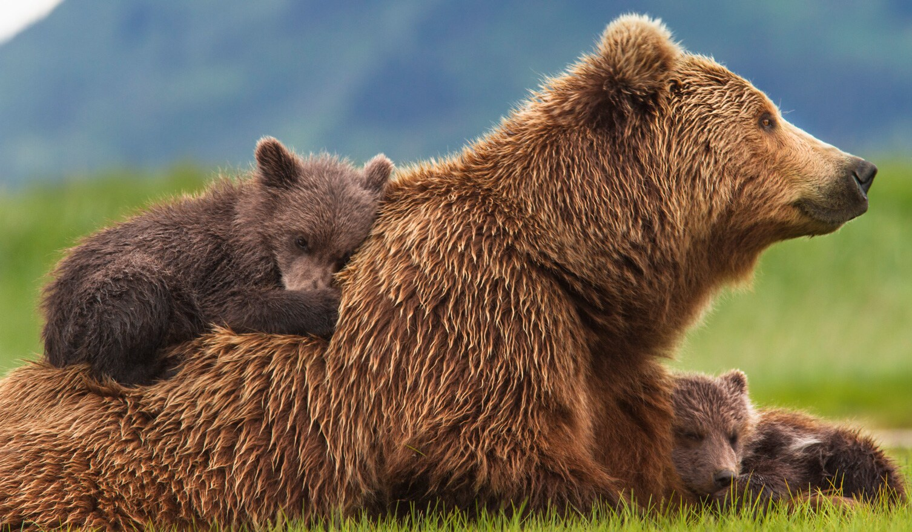
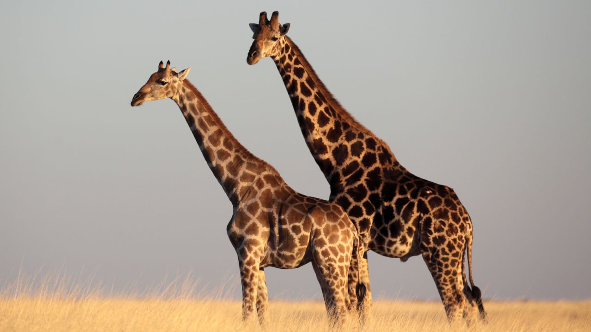
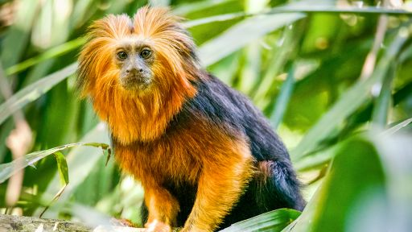
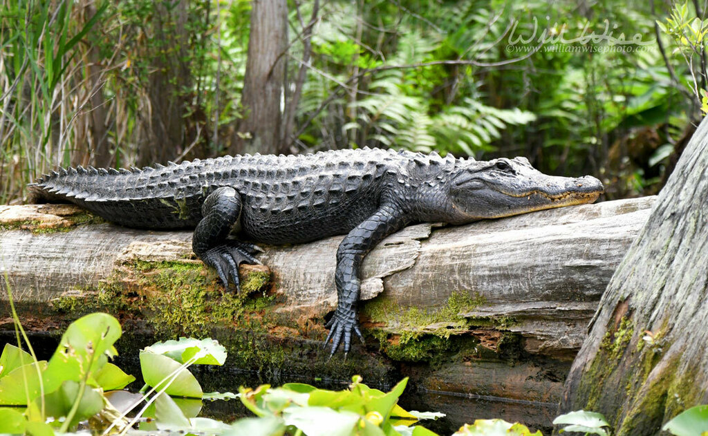

Bears
- Ollie
- Mona
A bear is a large, stocky animal with thick, fluffy fur. There are eight different species of bears that can be found across the world, including the Brown bear, the Polar bear, the Panda bear and the Sun bear.They have non-retractable claws, short stumpy tails and a strong sense of smell. Depending on the species, they can be large or small, with polar bears reaching about 6 feet long and weighing over 1000 pounds.
BearGiraffes
- Frankie
- Coconut
Giraffes are the world's tallest mammals, thanks to their towering legs and long necks. A giraffe's legs alone are taller than many humans—about 6 feet . These long legs allow giraffes to run as fast as 35 miles an hour over short distances and cruise comfortably at 10 miles an hour over longer distances.
GiraffeLions

- Mella
- Karl
The lion is a wild terrestrial animal called the king of the forest. The lion is a strong animal with a strong body, a big head, a majestic mane, and two fierce eyes. Lions are predatory animals and eat only after hunting. They have strong claws and sharp teeth, which help them hunt their prey and eat the flesh.
LionMonkeys
- Cookie
- Earl
- Banana Pudding
Monkeys use all four limbs—two arms and two legs—to walk and run. Their hands and feet are good for grasping tree branches. Monkeys have a coat of hair on most of their bodies. Many types have bare areas of skin on the face and buttocks.
MonkeyAlligators
- Wren
- Aspen
- Mika
Both males and females have an "armored" body with a muscular, flat tail. The skin on their back is armored with embedded bony plates called osteoderms or scutes. They have four short legs; the front legs have five toes while the back legs have only four toes.
Alligator